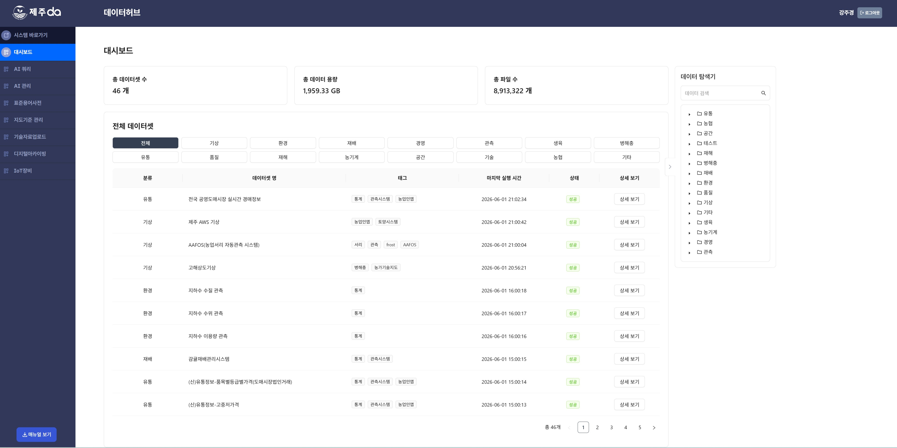
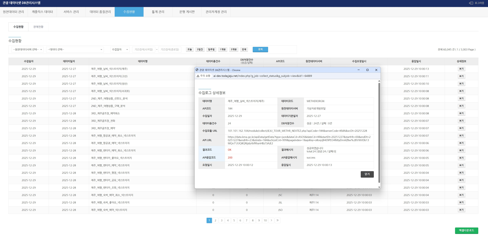

Services
산업 현장의 데이터로 AI를 만들고,
AI로 산업 현장을 지휘합니다.
㈜넥스트이지는 산업 현장의 실전 데이터로 최적화된 AI 솔루션을 구축하며, 지능화된 운영을 통해 대한민국 산업의 AX를 이끌고 있습니다.
01
eco
Agriculture
농업 AI/AX 서비스
02
flight_takeoff
Tourism
스마트 관광
04
dashboard
Platform
스마트 플랫폼
- 1
데이터 허브 & 데이터 거버넌스- · 데이터 표준·정제·품질 검증 파이프라인
- · AI 데이터 결합, 데이터 개발
- 2
AI 활용 서비스- · 생산량·가격·병해충·피해규모 예측
- · 병해충 식별 및 3D 관측 조사 자동화, RPA
- 3
농정업무 DX 전환- · 생육·병해충 예찰·관측·경영정보조사·소득조사
- · AI 디지털 영농일지 및 경영 효율 분석
- 4
IoT 장비 설치 및 운영- · 기상·토양·서리·디지털 트랩 등
- · IoT 데이터 수집·정제, 장비 모니터링
- · 공공 API·DB·파일·웹·IoT 자동 수집
- · 정형·비정형 통합, 주기 스케줄링
- · RPA 수작업 자동 연계
- · 결측·이상치·중복 처리, 키 결합
- · 표기 불일치·오류값 보정
- · 자동화로 지연·오류 최소화
- · 표준 스키마·수집 모듈
- · 코드·단위·포맷 규격화
- · 이종 데이터 공통 기준 정렬
- · 룰셋 — 필수·정규식·허용범위
- · 행 단위 결과 조회·시각화
- · 신뢰성·일관성 확보 후 전달
desktop_windows솔루션 대시보드 (예시 화면)


① 서비스 계층 — 7개 분야 디지털 농정 서비스 + 농업인 서비스
② 플랫폼 계층 — 제주농업 JADx 플랫폼
운영·관리
콘텐츠·CMS
데이터 관리
정책·서비스
외부 연계·통합
보안·인프라
검색·시각화
사용자 UI
③ 데이터 계층 — 데이터 허브 (34종)
원시데이터
규격화·표준화
농지·필지 정제
LLM 기반 AI 검색
현장 영상·센서·이력 데이터를 학습해 식별·예측·진단·자동화를 수행하는, 농업 현장에 바로 쓰이는 실전 AI.
- · 병해충 AI 식별모델 12종 (YOLO)
- · 감귤 3D 과실측정 (2h→30분)
- · 채소 영상 생육조사 자동화
- · 재식주수·폐원·하우스 변화 분석
- · 감귤·당근 생산량·가격 (Ensemble)
- · 태풍 피해규모 예측·경로 시뮬
- · 토양 유효수분(가뭄지수) 도출
- · 토양 분류 (화산/비화산, 889점)
- · 보조금·뉴스 AI 자동 분류
- · 임베딩 통합검색 + 멀티턴 대화
- · 질의응답·관련 자료 자동 추천
- · 액비 검사결과 자동 연계·살포 모니터링
- · 보조금·뉴스 스크래핑 → AI 분류 → 맞춤 알림
지역 관광요소 + 데이터·AI·ICT 융복합으로, 앱 하나로 도시 여행을 원스톱 통합하는 스마트 관광 솔루션. (적용 사례: 여수여행 통합플랫폼 「여수엔」)
- · 음식점 사전예약·오더&페이
- · 숙소·관광지 사전예약·QR체크인
- · 특산물 온라인 쇼핑·통합 예약·결제
- · MICE 행사 정보·사전등록
- · 실시간 항공·KTX 예약
- · 나만의 여행일정·플래닝·공유
- · 짐배송·짐보관 서비스
- · 다국어(한·영·중) 지원
- · 시내버스·BIS 정보
- · 주차장 실시간 정보·결제
- · 택시 호출·렌터카 예약
- · 공유 킥보드·자전거 대여
- · 빅데이터 플랫폼·관제·연동
- · 전남 J-Tass 연동
관광상품 라이브 방송 + Real Time 채팅 상담·예약을 결합한 라이브 커머스 연계형 관광 실시간 예약 OTA. (적용: 제주관광 라이브커머스)
- · 스튜디오 촬영의 이질감·신뢰도/재방문율 저하 보완
- · 현장 라이브 촬영으로 고퀄리티 콘텐츠 생산
- · 쇼호스트 섭외·생동감 있는 소개
- · 숙소·관광지·음식점·항공·골프 등
- · 관광지 구석구석 소개·대리만족
- · 실시간 채팅 상담
- · 방송 보며 즉시 예약·결제
- · 사용자 편의성 증대
- · 라이브서비스 운영콘솔 (설정·모니터링·통계)
- · 통합운영관리시스템 (데이터연동·예약·정산)
- · B2B 운영지원시스템 (여행업체)
- · 외부 B2B용 API Center 제공
특허출원 · 라이브 방송 기반 관광 OTA 플랫폼 (2024)저작권등록 · 운영콘솔·통합운영관리시스템 (2024)
과거 발전량 + 기상 데이터를 학습해 미래 발전량을 예측하고, 발전량 예측 AI알고리즘 탑재 통합 모니터링으로 발전소를 운영·관리하는 솔루션.
- · Image Map 기반 발전소 위치·실시간 이상현황
- · 정상/주의/고장/AI알람 감지
- · 예측 vs 실제 데이터 비교 시각화
- · 발전소 신규 등록·기본정보 관리
- · 인버터/모듈 재고관리
- · 점검이력 연계로 업무 효율 증대
모바일 점검이력Mobile Inspection
- · 수기·현장출동 관리 → 모바일 전환
- · 실시간 업로드·즉시 수정·관리
- · 개별 사업주 모바일 현황 확인
- · 발전량 예측정보 실시간 수신
TTA 시험성적 (23.8)KPX 소규모전력중개 예측정산금 참여특허출원 (진행중)언론보도 · 동아일보·전자신문 등
전시·컨퍼런스·비즈니스관광 등 다양한 MICE 행사를, 웹사이트 구축 → 사전등록 → DB·현장등록 → 매표까지 한번에 통합 관리하는 원스톱 솔루션 (MICE-NICE).
- · 3일에 완성하는 행사 홈페이지
- · 다양한 디바이스 반응형 웹
- · CMS 관리자 + 자유도 높은 등록 폼
- · Buyer–Seller 비즈니스 미팅 지원
- · 셀프 미팅·최적 미팅 관리
사전등록·사전결제Pre-Registration
- · 회원가입 없이 간편 본인인증 사전등록
- · 다양한 온라인 결제방식 지원
- · 네임택·QR 사전등록/결제 확인
- · 참가·매출 실시간 모니터링
- · DB연동·오프라인 결제·PC캠 출입확인
GS인증 · MICE-NICE v1.0 (2014)제주 대표 MICE — 국제전기자동차엑스포·국제크루즈포럼 등
표준 프레임워크 기반으로 콘텐츠 생산 → 출판 → 배포 → 평가 라이프사이클을 체계적으로 관리해, 수작업 오류를 방지하고 생산성을 높이는 CMS 솔루션 (나이스 CMS).
- · 페이지 제작·관리, 유형별 유동적 관리
- · 콘텐츠 생성·수정·삭제 기능 탑재
- · 일반게시물·카드뉴스·사진게시물 CSS 템플릿
- · 페이지 레이아웃 템플릿 제작·관리
- · 관리자 등록·그룹 생성·권한 관리
- · 콘텐츠 유형별 담당자 지정·권한 부여
- · 권한별 차등기능 부여 (마이콘텐츠 연계)
GS인증 1등급 · 나이스 CMS v1.1 (2017)제주 공공기관 다수 — 제주도청·제주시청·유관기관 등
사진·작품만 올리면 템플릿 기반으로 나만의 갤러리형 홈페이지가 자동 완성되는, 코딩 없는 개인 포트폴리오 솔루션 (포토비).
- · 템플릿 선택 → 즉시 사이트 생성
- · 코딩 없이 누구나 제작
- · 개인 도메인·주소 연결
- · 앨범·카테고리별 사진 정리
- · 그리드·슬라이드 등 다양한 레이아웃
- · 고해상도 이미지 뷰어
- · PC·모바일 반응형 자동 대응
- · SNS·링크 공유, 방명록·댓글
- · 드래그&드롭 업로드·정렬
- · 테마·색상 커스터마이징
- · 공개/비공개 접근권한 설정
자체 서비스 · 포토비(photoBee)노코드 · 개인 갤러리 특화
- 1
스마트 편의 서비스음식점 사전예약 및 오더&페이, 숙소·관광지 사전예약 및 QR체크인, 특산물 온라인 쇼핑 및 통합 예약·결제, MICE 행사 정보 및 사전등록 신청, 실시간 항공 및 KTX 예약
- 2
스마트 투어 서비스나만의 여행일정 짜기 및 플래닝·공유 기능, 짐배송 및 짐보관 서비스, 다국어(한·영·중) 서비스
- 3
스마트 모빌리티 서비스시내버스 및 BIS 정보, 지역 내 주차장 실시간 정보 및 결제, 택시호출·렌터카 예약, 공유 킥보드·자전거 대여
- 4
스마트 플랫폼 서비스빅데이터 플랫폼·관제 및 연동, 전남 J-Tass 연동 기능 등
- 1
태양광 발전량 예측 서비스기상·발전 데이터 학습 예측 모델, TTA 인증 정확도 95%+, KPX 소규모전력중개 시범참여 93.9%, 다수 발전소 통합 예측 및 입찰 운영
- 2
발전량예측 기반 고장예지 서비스예측값과 실측 발전량 편차 분석, 이상 패턴 탐지 및 조기 경보, 발전 효율 저하·설비 고장 사전 예지
- 3
전기차 차량 스케줄링 서비스충전·운행 스케줄 최적화, 전기차 예약 시스템(특허 보유), 전력 수요·요금·발전량 연계 배차
- 4
ESS기반 풍력발전량 운영 지원 서비스ESS 연계 풍력 발전량 평활화·운영 지원, 출력 변동(간헐성) 대응, 안전 클라우드(eWEMS) 기반 운영
- 1
CMS 웹사이트 저작툴나이스 CMS(GS 1등급), 템플릿·노코드 기반 웹사이트 제작·운영, 권한 관리·다채널 응답형, 공공·관광 홈페이지 71여 곳 운영
- 2
플랫폼 구축분석·설계·구축·운영 풀스택, 통합 포털·플랫폼, OpenAPI·외부 시스템 연동
- 3
모바일 서비스 구축앱·반응형 모바일 웹, 현장형 모바일 서비스(점검·운영용) 등
- 4
빅데이터·관제 구축분산 데이터 수집·정합·품질관리·시각화, 통합 모니터링·관제